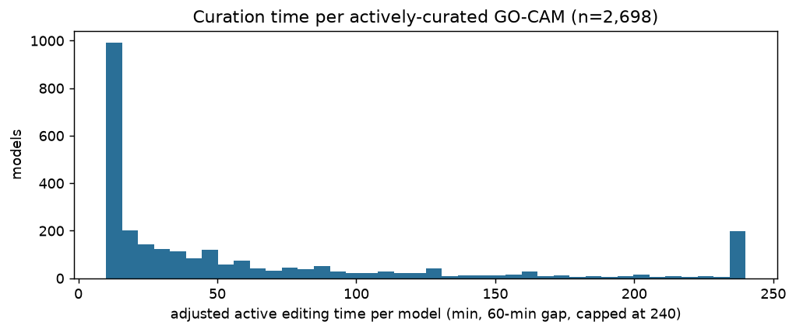
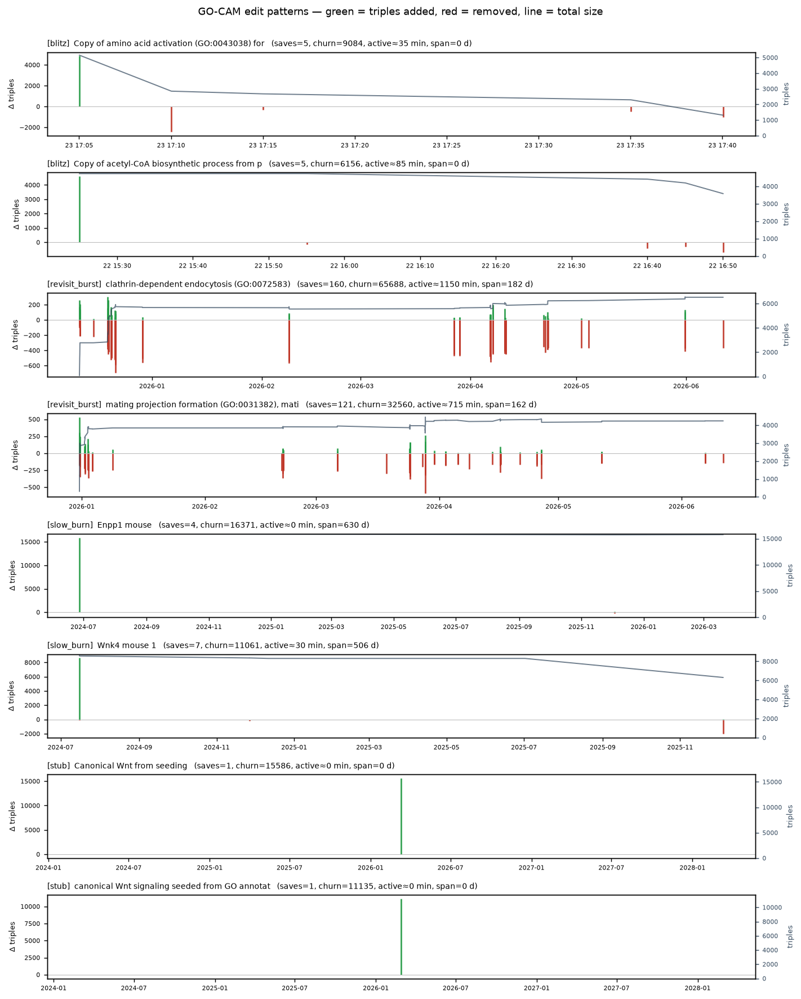

Derived from geneontology/noctua-models git history (last 2 years).
4,515 native GO-CAMs 25,832 save events ~3,480 person-hours (adjusted, lower bound)
The minerva→GitHub bot commits every ~5 minutes, so each commit touching a model is a save event at ~5-min resolution. Save events are grouped into sessions; active editing time is measured as save-to-save spans within a session — a lower bound that excludes literature reading and planning done outside Noctua. Edit size is triples added/removed per save, from a DuckDB triple-store-over-time.
| Cohort | Models | Active time, median (measured / adjusted) | Active time, mean (measured / adjusted) | Sessions | Active days | Span | Triples |
|---|---|---|---|---|---|---|---|
| All recent native GO-CAMs | 4,515 | 0 / 10 min | 34 / 46 min | 1 | 1 | 0 d | 350 |
| Multi-save (≥2 commits) | 2,698 | 15 / 30 min | 57 / 74 min | 2 | 2 | 14 d | 410 |
| Substantial (≥5 commits) | 1,269 | 65 / 80 min | 111 / 138 min | 4 | 3 | 57 d | 555 |

Representative models. Green = triples added, red = removed, line = total model size.

| Pattern | Title | Saves | Churn | Active | Span | Model |
|---|---|---|---|---|---|---|
blitz | Copy of amino acid activation (GO:0043038) for tRNA Gly,Cys, | 5 | 9084 | 35 min | 0 d | 682fbcd000000787 |
blitz | Copy of acetyl-CoA biosynthetic process from pyruvate (GO:00 | 5 | 6156 | 85 min | 0 d | 678073a900002175 |
revisit_burst | clathrin-dependent endocytosis (GO:0072583) | 160 | 65688 | 1150 min | 182 d | 6918f23700004722 |
revisit_burst | mating projection formation (GO:0031382), mating projection | 121 | 32560 | 715 min | 162 d | 693b3c0900004140 |
slow_burn | Enpp1 mouse | 4 | 16371 | 0 min | 630 d | 60ad85f700002009 |
slow_burn | Wnk4 mouse 1 | 7 | 11061 | 30 min | 506 d | 62183af000000355 |
stub | Canonical Wnt from seeding | 1 | 15586 | 0 min | 0 d | 5667fdd400000892 |
stub | canonical Wnt signaling seeded from GO annotations March 201 | 1 | 11135 | 0 min | 0 d | 56d1143000001737 |
Caveats. True native GO-CAMs only (gene-centric/import models excluded). Bulk pipeline commits dropped. Saves within one 5-min window collapse. Active time is a lower bound on real effort.